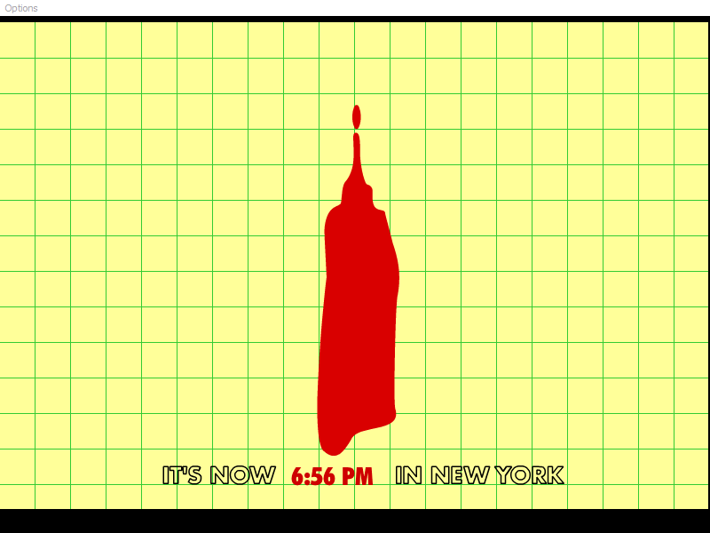

Heinz Screensaver
Heinz Ketchup Screensaver
Note: This is a 16-bit program and requires special programs to install on 64-bit Windows, such as
otvdm
.

DOWNLOAD
.exe file zipped (Windows) (1.84 MB)
.sea file (Mac OS) (2.30 MB)

 .exe file zipped (Windows) (1.84 MB).sea file (Mac OS) (2.30 MB)
.exe file zipped (Windows) (1.84 MB).sea file (Mac OS) (2.30 MB)